Acknowledgements
References for this Material:
- Treedata book by Guangchuang Yu (Yu 2022) https://yulab-smu.top/treedata-book/
- https://bioconnector.github.io/workshops/r-ggtree.html
Learning objectives
At the end of this lesson you will:
- Understand information content of phylogenetically structured data
- Understand particular R tree formats in ape, phylobase, and ouch
- Be able to hand-make trees
- Be able to import trees from nexus, newick, and other major formats in use today
- Be able to convert trees from one format to another
- Be able to perform basic tree manipulations
apeggtreetidytreetreeioTDbookggplot2ouch
Overview
ggtree is a powerful phylogenetic tree plotting package, that is used alongside treeio and tidytree packages to import/export and to manipulate phylogenetic trees, respectively. These packages allow you to subset or combine trees with data, annotate, and plot in so many different ways using the grammar of graphics.
Because itʻs written in the style of ggplot2 and the tidyverse, there are a lot of functions to remember, and now there are also multiple object types. The key to working effectively with ggtree is to be aware of what type of object you are working with, whether it is a dataframe, a tibble, a phylo tree, a treedata tibble, or ggtree object. It is easy to convert between these at will if you know what you are dealing with.
phylo -> treedata
Functions like read.tree amd read.nexus, etc. will read in objects of class phylo (they are actually referencing the ape function).
To show this, letʻs first generate a random tree using ape::rtree()
Note: ggtree can also accept phylo objects as arguments:
ggtree(tree) # ggtree plotting function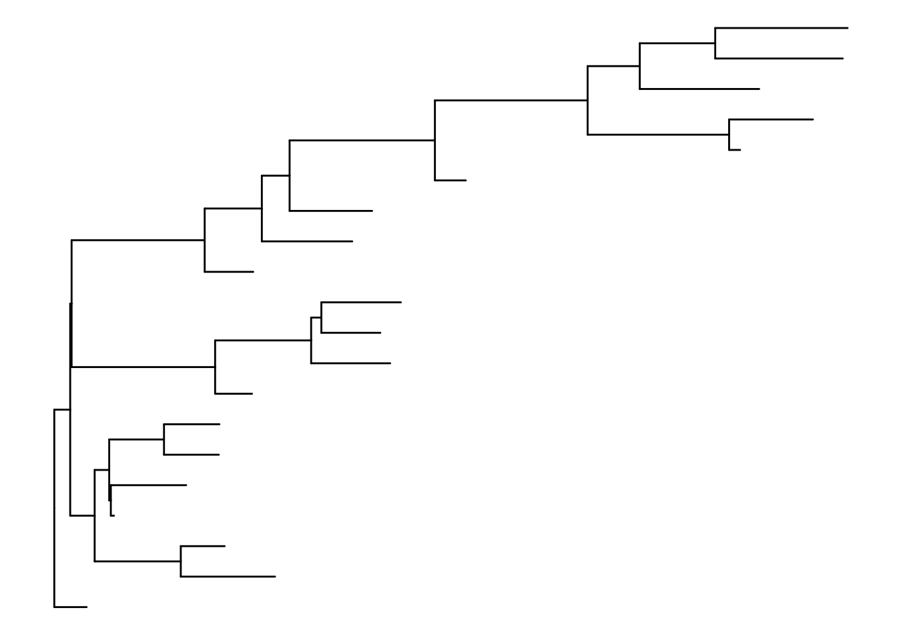
To save as newick and nexus formats, treeio has the following:
treeio::write.nexus(tree, file="tree.nex")
treeio::write.tree(tree, file="tree.tree")
list.files() [1] "_index.qmd" "anolis.SSD.raw.csv" "bigtree.nex"
[4] "ggtree_functions.R" "ggtree.R" "inclass.R"
[7] "index_files" "index.qmd" "index.rmarkdown"
[10] "tree.nex" "tree.tree" Take a look at these files. They should be in nexus and newick formats, respectively.
tree_nex <- treeio::read.nexus(file="tree.nex")
tree_new <- treeio::read.newick(file="tree.tree")
class(tree_nex)[1] "phylo"class(tree_new)[1] "phylo"If you have trees from iqtree, BEAST etc., you should use the specialized read functions because they will capture the metadata embedded in the treeformat including support values.
Coverting between data types
The main functions for coersion are:
as.phylo (tree) # to phylo
Phylogenetic tree with 20 tips and 19 internal nodes.
Tip labels:
t6, t19, t15, t16, t2, t18, ...
Rooted; includes branch length(s).as.treedata(tree) # to treedata'treedata' S4 object'.
...@ phylo:
Phylogenetic tree with 20 tips and 19 internal nodes.
Tip labels:
t6, t19, t15, t16, t2, t18, ...
Rooted; includes branch length(s).treedata <- as.treedata(tree)
as_tibble(treedata) # to tibble# A tbl_tree abstraction: 39 × 4
# which can be converted to treedata or phylo
# via as.treedata or as.phylo
parent node branch.length label
<int> <int> <dbl> <chr>
1 21 1 0.211 t6
2 25 2 0.0205 t19
3 25 3 0.493 t15
4 26 4 0.359 t16
5 26 5 0.363 t2
6 27 6 0.616 t18
7 27 7 0.287 t13
8 31 8 0.540 t14
9 32 9 0.202 t10
10 34 10 0.0719 t9
# ℹ 29 more rowsSimulate phenotypic data
Add tiplabels
ggtree(tree) + geom_tiplab()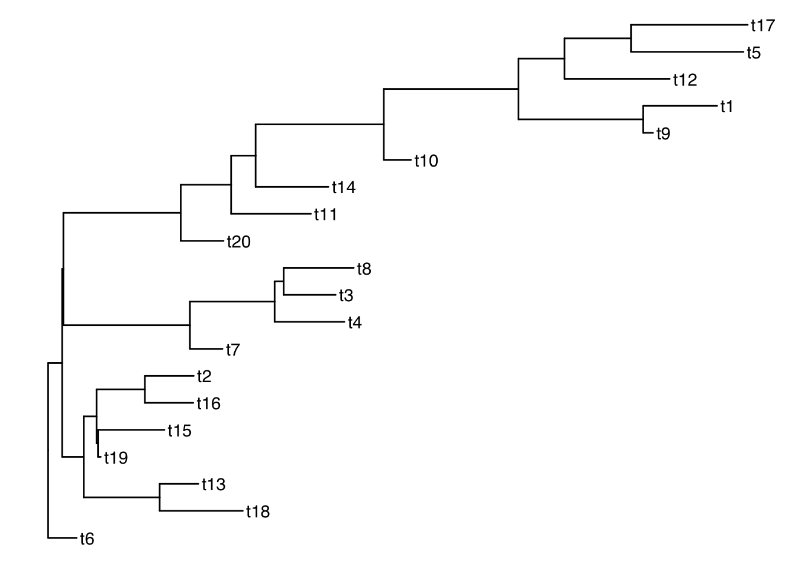
Get the tip labels
There is a function get_taxa_name() which is very handy, but NOTE: its argument is a ggtree object, not a treedata object.
p <- ggtree(tree) + geom_tiplab()
get_taxa_name(p) [1] "t17" "t5" "t12" "t1" "t9" "t10" "t14" "t11" "t20" "t8" "t3" "t4"
[13] "t7" "t2" "t16" "t15" "t19" "t13" "t18" "t6" taxa <- get_taxa_name(p)Simulate a data matrix:
n <- length(taxa)
size <- rnorm(n, mean=20, sd=5)
habitat <- sample(c("desert", "grassland", "forest", "intertidal"), size=n, replace=T)
dat <- data.frame( "label"= taxa, size, habitat)
dat label size habitat
1 t17 12.86105 grassland
2 t5 31.25774 forest
3 t12 21.43777 grassland
4 t1 17.61510 grassland
5 t9 21.89762 forest
6 t10 18.52082 desert
7 t14 30.01839 grassland
8 t11 23.58696 grassland
9 t20 23.90757 intertidal
10 t8 24.53455 desert
11 t3 21.79389 desert
12 t4 19.42923 grassland
13 t7 21.90441 desert
14 t2 27.65435 desert
15 t16 14.96855 intertidal
16 t15 24.14979 forest
17 t19 12.13357 grassland
18 t13 28.80982 forest
19 t18 19.61751 desert
20 t6 17.84677 intertidalSee our ggtree as a treedata object:
as.treedata(p) %>% as_tibble %>% as.data.frame parent node branch.length label
1 21 1 0.211462186 t6
2 25 2 0.020523685 t19
3 25 3 0.492876891 t15
4 26 4 0.358771561 t16
5 26 5 0.362600771 t2
6 27 6 0.616498912 t18
7 27 7 0.286937086 t13
8 31 8 0.539667591 t14
9 32 9 0.201774493 t10
10 34 10 0.071909918 t9
11 34 11 0.548395909 t1
12 35 12 0.781278409 t12
13 36 13 0.834200829 t5
14 36 14 0.865846023 t17
15 30 15 0.591518627 t11
16 29 16 0.317440855 t20
17 37 17 0.241390239 t7
18 38 18 0.517082721 t4
19 39 19 0.385656054 t3
20 39 20 0.519972739 t8
21 21 21 NA <NA>
22 21 22 0.104038035 <NA>
23 22 23 0.160041574 <NA>
24 23 24 0.095194947 <NA>
25 24 25 0.010641325 <NA>
26 24 26 0.358477827 <NA>
27 23 27 0.563482889 <NA>
28 22 28 0.009179101 <NA>
29 28 29 0.870633200 <NA>
30 29 30 0.373868619 <NA>
31 30 31 0.181675595 <NA>
32 31 32 0.950593904 <NA>
33 32 33 0.999016533 <NA>
34 33 34 0.925645936 <NA>
35 33 35 0.341042848 <NA>
36 35 36 0.493788643 <NA>
37 28 37 0.938912940 <NA>
38 37 38 0.628192976 <NA>
39 38 39 0.066866069 <NA> # ggtree -> treedata -> tibble -> dataframeMerge tree with data
Now that we have a matching key in both the tree and data objects, we can join the tree with the dataframe by those matching labels using ggtreeʻs full_join:
ttree <- full_join(tree, dat, by = "label")
ttree'treedata' S4 object'.
...@ phylo:
Phylogenetic tree with 20 tips and 19 internal nodes.
Tip labels:
t6, t19, t15, t16, t2, t18, ...
Rooted; includes branch length(s).
with the following features available:
'', 'size', 'habitat'.
# The associated data tibble abstraction: 39 × 5
# The 'node', 'label' and 'isTip' are from the phylo tree.
node label isTip size habitat
<int> <chr> <lgl> <dbl> <chr>
1 1 t6 TRUE 17.8 intertidal
2 2 t19 TRUE 12.1 grassland
3 3 t15 TRUE 24.1 forest
4 4 t16 TRUE 15.0 intertidal
5 5 t2 TRUE 27.7 desert
6 6 t18 TRUE 19.6 desert
7 7 t13 TRUE 28.8 forest
8 8 t14 TRUE 30.0 grassland
9 9 t10 TRUE 18.5 desert
10 10 t9 TRUE 21.9 forest
# ℹ 29 more rows parent node branch.length label size habitat
1 21 1 0.211462186 t6 17.84677 intertidal
2 25 2 0.020523685 t19 12.13357 grassland
3 25 3 0.492876891 t15 24.14979 forest
4 26 4 0.358771561 t16 14.96855 intertidal
5 26 5 0.362600771 t2 27.65435 desert
6 27 6 0.616498912 t18 19.61751 desert
7 27 7 0.286937086 t13 28.80982 forest
8 31 8 0.539667591 t14 30.01839 grassland
9 32 9 0.201774493 t10 18.52082 desert
10 34 10 0.071909918 t9 21.89762 forest
11 34 11 0.548395909 t1 17.61510 grassland
12 35 12 0.781278409 t12 21.43777 grassland
13 36 13 0.834200829 t5 31.25774 forest
14 36 14 0.865846023 t17 12.86105 grassland
15 30 15 0.591518627 t11 23.58696 grassland
16 29 16 0.317440855 t20 23.90757 intertidal
17 37 17 0.241390239 t7 21.90441 desert
18 38 18 0.517082721 t4 19.42923 grassland
19 39 19 0.385656054 t3 21.79389 desert
20 39 20 0.519972739 t8 24.53455 desert
21 21 21 NA <NA> NA <NA>
22 21 22 0.104038035 <NA> NA <NA>
23 22 23 0.160041574 <NA> NA <NA>
24 23 24 0.095194947 <NA> NA <NA>
25 24 25 0.010641325 <NA> NA <NA>
26 24 26 0.358477827 <NA> NA <NA>
27 23 27 0.563482889 <NA> NA <NA>
28 22 28 0.009179101 <NA> NA <NA>
29 28 29 0.870633200 <NA> NA <NA>
30 29 30 0.373868619 <NA> NA <NA>
31 30 31 0.181675595 <NA> NA <NA>
32 31 32 0.950593904 <NA> NA <NA>
33 32 33 0.999016533 <NA> NA <NA>
34 33 34 0.925645936 <NA> NA <NA>
35 33 35 0.341042848 <NA> NA <NA>
36 35 36 0.493788643 <NA> NA <NA>
37 28 37 0.938912940 <NA> NA <NA>
38 37 38 0.628192976 <NA> NA <NA>
39 38 39 0.066866069 <NA> NA <NA>And thatʻs what our treedata object looks like flattened out!
Subsetting the tree
Functions: drop.tip() and keep.tip()
Suppose we want to drop all of the even tips:
todrop <- paste("t", 1:10*2, sep="")
todrop [1] "t2" "t4" "t6" "t8" "t10" "t12" "t14" "t16" "t18" "t20"smalltree <- drop.tip(ttree, todrop)
smalltree'treedata' S4 object'.
...@ phylo:
Phylogenetic tree with 10 tips and 9 internal nodes.
Tip labels:
t19, t15, t13, t9, t1, t5, ...
Rooted; includes branch length(s).
with the following features available:
'', 'size', 'habitat'.
# The associated data tibble abstraction: 19 × 5
# The 'node', 'label' and 'isTip' are from the phylo tree.
node label isTip size habitat
<int> <chr> <lgl> <dbl> <chr>
1 1 t19 TRUE 12.1 grassland
2 2 t15 TRUE 24.1 forest
3 3 t13 TRUE 28.8 forest
4 4 t9 TRUE 21.9 forest
5 5 t1 TRUE 17.6 grassland
6 6 t5 TRUE 31.3 forest
7 7 t17 TRUE 12.9 grassland
8 8 t11 TRUE 23.6 grassland
9 9 t7 TRUE 21.9 desert
10 10 t3 TRUE 21.8 desert
# ℹ 9 more rowsggtree(smalltree) + geom_tiplab()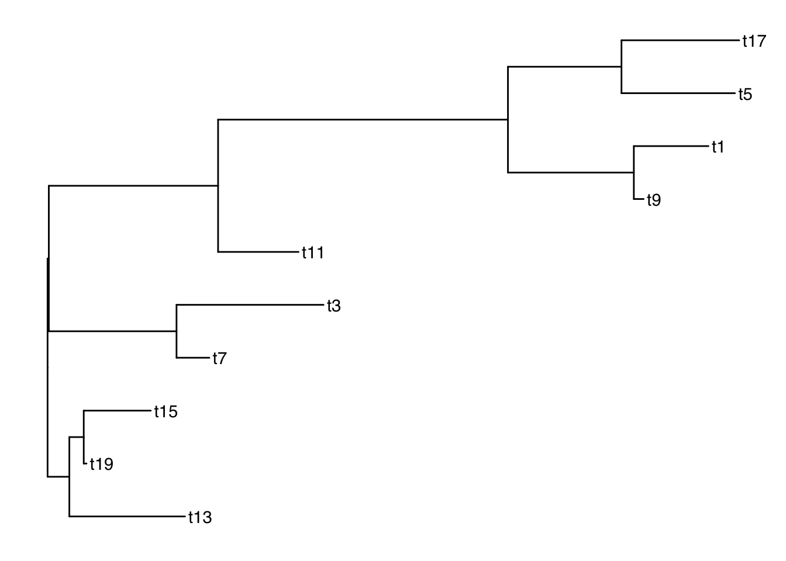
drop.tip keeps all of the metadata! keep.tip is imported from ape so it has to be converted to phylo and then the data joined again after.
Plotting with node labels
The geometries geom_text() and geom_node() are helpful for labelling all of the nodes. The function geom_tiplab() labels only the tips.
Add node labels so you know what the internal node numbers are:
ggtree(smalltree) +
geom_tiplab() +
geom_text(aes(label=node), hjust=-.3) # node numbers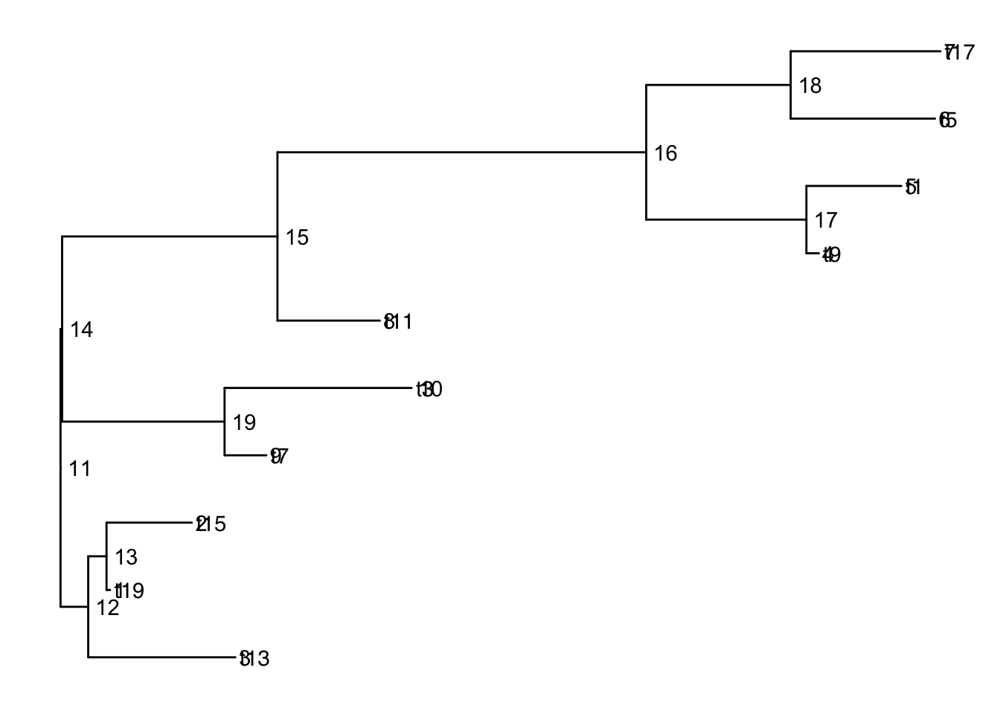
Note: The tiplabels and the node labels crashed!
There are also 2 versions: geom_text2() and geom_node2() that allow subsetting the nodes, when you want the geometry to apply to only some of the nodes.
ggtree(smalltree) +
geom_tiplab() +
geom_text2(aes(label=node, subset=!isTip), hjust=-.3) # node numbers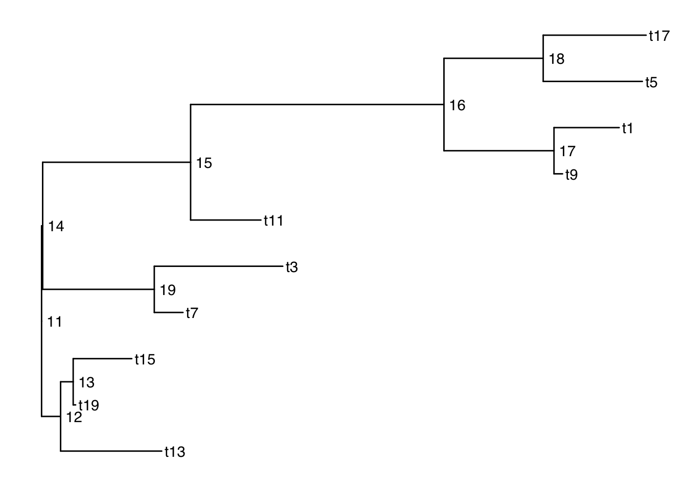
isTip is a column of the ggtree object, so it is inherited when we provide the ggtree object.
Plotting with alternative tip labels
The dataframe portion of the treedata object can hold any number of columns of metadata. Perhaps you have some real names in a different column (like a display name), it is easy to swap out the tip labels. Here letʻs just use the habitat column
ggtree(smalltree) +
geom_tiplab(aes(label=habitat)) +
geom_text2(aes(label=node, subset=!isTip), hjust=-.3) # node numbers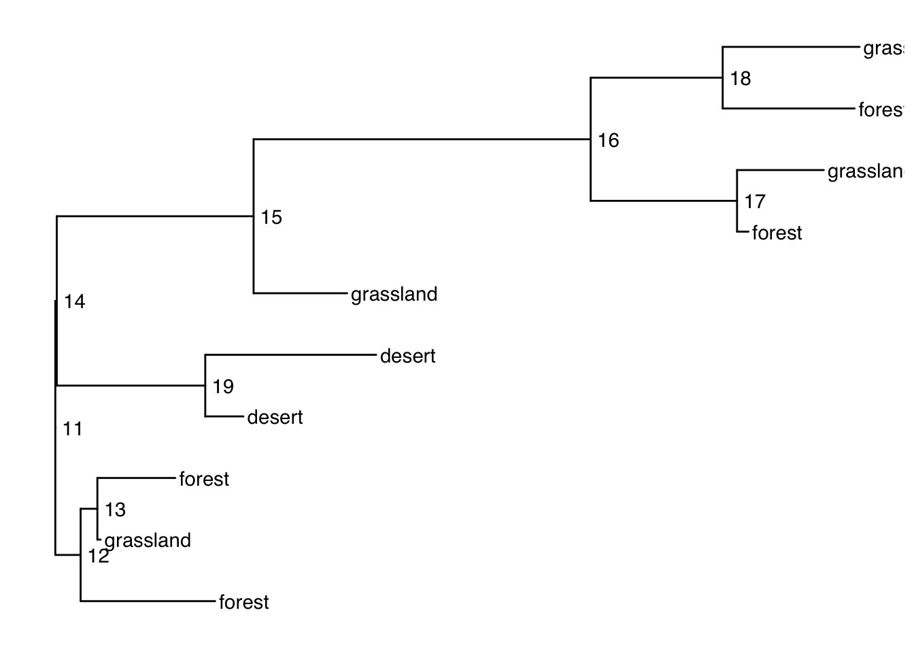
When your tip labels get cut off
Add an x scale (usually time):
ggtree(smalltree) +
geom_tiplab(aes(label=habitat)) +
geom_text2(aes(label=node, subset=!isTip), hjust=-.3) + # node numbers
theme_tree2()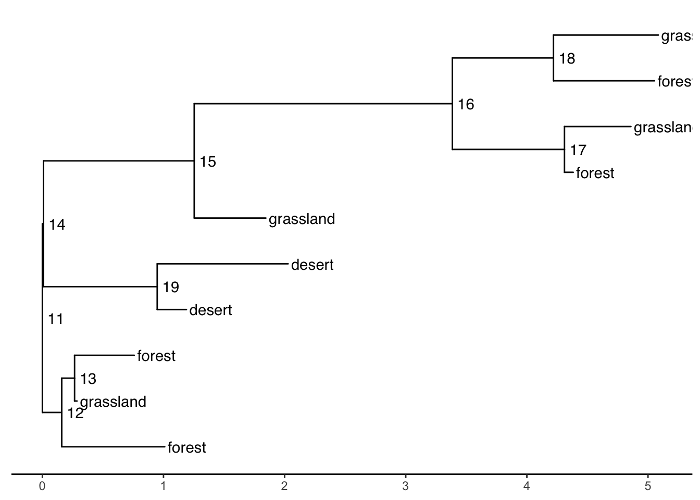
You can increase the size of the plot area to accommodate the longer labels:
ggtree(smalltree) +
geom_tiplab(aes(label=habitat)) +
geom_text2(aes(label=node, subset=!isTip), hjust=-.3) + # node numbers
theme_tree2() +
xlim(0,5)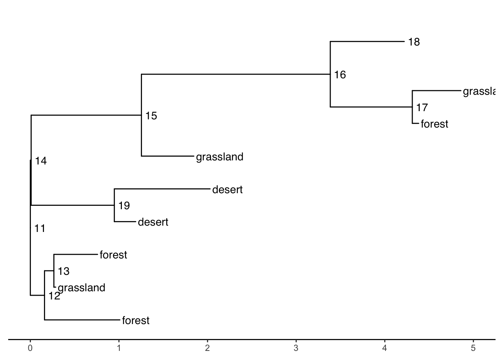
Tree layouts
require(cowplot)
plot_grid(
ggtree(ttree),
ggtree(ttree, branch.length='none'),
ggtree(ttree, layout="dendrogram"),
ggtree(ttree, layout="roundrect"),
ggtree(ttree, layout="ellipse"),
ggtree(ttree, layout="ellipse", branch.length="none"),
ggtree(ttree, layout="circular"),
ggtree(ttree, branch.length='none', layout='circular'),
ggtree(ttree, layout="fan", open.angle=120),
ggtree(ttree, layout="inward_circular")
)Plotting data on the tree
geom_facet() and facet_plot() are general methods to link graphical layers to a tree.
These functions require an input dataframe with the first column containing the taxon labels (the key which matches to the tip labels of the phylogeny).
Internally these functions reorder the input data based on the tree structure so that you donʻt have to worry about the order of the rows.
Multiple layers can be added to the same dataset. Also different datasets can be added to the same figure.
A table of the geom layers that work with geom_facet is provided here.
Example: plot smalltree with size in a barplot
First make a tibble to attach to the tree. As of this writing, geom_facet will not accept a treedata object. It wants a dataframe or tibble of only the tips. But this is easy to make from the treedata. We just have to filter out the non-tip rows, then rearrange the columns to put the labels first:
We can then add the barplot as a panel next to the tree plot using geom_facet:
ggtree(smalltree) +
geom_tiplab() +
theme_tree2() +
geom_facet(panel = "Size",
data=smdat,
geom = geom_col,
mapping=aes(x = smdat$size),
orientation = 'y',
width = .6,
fill="blue") 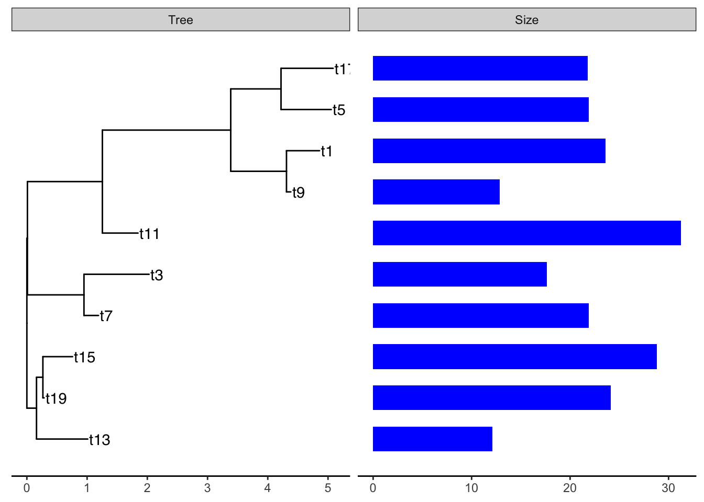
The arguments for geom_facet() are:
-
panel: The name of the panel, displayed on top -
data: atibbleordataframecontaining the metadata to plot. Must have as the first column the tip labels that are found in the phylogenetic tree. -
geom: a geom layer specifying the style of plot -
mapping: the aesthetic mapping. I should not have to supply thesmdat$here but it wonʻt work otherwise. - any additional parameters for the plot
A tree-panel and annotation example from the Tree Data Book:
This example plots a phylogeny alongside SNP (single nucleotide polymorphism) data and a barplot of some simulated data (Yu 2022).
The %+>% operator for ggtree objects
The %+>% operator is used to add data (dataframe, tibble) to a ggtree object:
my_ggtree <- my_ggtree %<+% new_dataThe result is a combined object that can be used for plotting, but it does not modify the original treedata object (which is a different object from the ggtree object). The full_join() function can be used to combine a tree with data to produce a new treedata object.
Example of the %+>% operator to add data to a ggtree object.
The package TDbook is the data accompanyment to (Yu 2022)ʻs Tree Data book. It is available on CRAN so you can install it with the usual install.packages("TDbook") function call.
p <- ggtree(tree_boots) %<+% df_tip_data + xlim(-.1, 4)
p2 <- p + geom_tiplab(offset = .6, hjust = .5) +
geom_tippoint(aes(shape = trophic_habit, color = trophic_habit,
size = mass_in_kg)) +
theme(legend.position = "right") +
scale_size_continuous(range = c(3, 10))
p2 %<+% df_inode_data +
geom_label(aes(label = vernacularName.y, fill = posterior)) +
scale_fill_gradientn(colors = RColorBrewer::brewer.pal(3, "YlGnBu"))Warning: Removed 7 rows containing missing values or values outside the scale range
(`geom_label()`).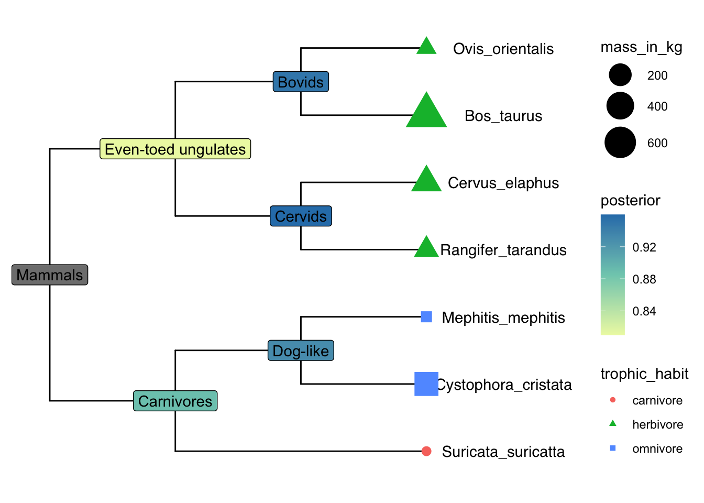
Explore df_info
df_info A dataframe containing sampling info for the tips of the tree. 386 rows and 6 variables, with the first column being taxa labels (id).
df_alleles The allele table with original raw data to be processed to SNP data. It is a table of nucleotides with 386 rows x 385 variables. The first row contains tips labels. Column names are non-sense. The rownames (exept for the first one) contains the snp position along the genome.
## load `tree_nwk`, `df_info`, `df_alleles`, and `df_bar_data` from 'TDbook'
tree <- tree_nwk
snps <- df_alleles
snps_strainCols <- snps[1,]
snps<-snps[-1,] # drop strain names
colnames(snps) <- snps_strainCols
gapChar <- "?"
snp <- t(snps) # not rectangular!
lsnp <- apply(snp, 1, function(x) {
x != snp[1,] & x != gapChar & snp[1,] != gapChar
}) # different from row 1, not missing
lsnp <- as.data.frame(lsnp)
lsnp$pos <- as.numeric(rownames(lsnp)) # position from rownames
lsnp <- tidyr::gather(lsnp, name, value, -pos)
snp_data <- lsnp[lsnp$value, c("name", "pos")] # only TRUEssnp_data A dataframe containing SNP position data. 6482 x 2. The first column contains taxa labels coresponding to the tips of the tree (name). There are multiple rows per taxon, the second colum is the position pos of the snp in the genome. This is used as the x-variable in the plot.
In the dataframe snp_data the rows are ordered by position along the sequence (the x-dimension of this data), but the first column is the strain (taxon) name which matches the tips in the phylogenetic tree.
## visualize the tree
p <- ggtree(tree)
## attach the sampling information data set
## and add symbols colored by location
p <- p %<+% df_info + geom_tippoint(aes(color=location))
p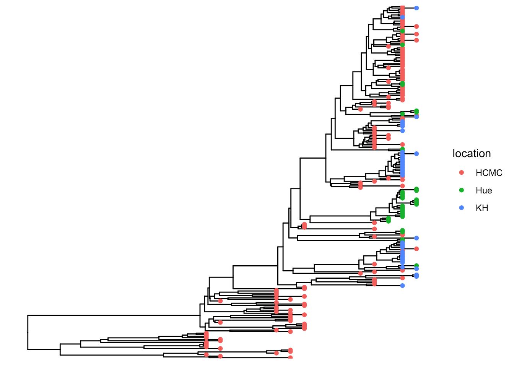
Add SNP and Trait plots aligned to the tree
Use geom_facet with reference to the respective dataframes/tibbles to add plots alignted to the tree. For the SNP plot, we will use geom_point which allows x-y plotting, with x-coordinate determined by pos and the y-coordinate aligned with the taxon. The symbol is the vertical line |.
## visualize SNP and Trait data using dot and bar charts,
## and align them based on tree structure
p1 <- p + geom_facet(panel = "SNP", data = snp_data, geom = geom_point,
mapping=aes(x = pos, color = location), shape = '|')
p1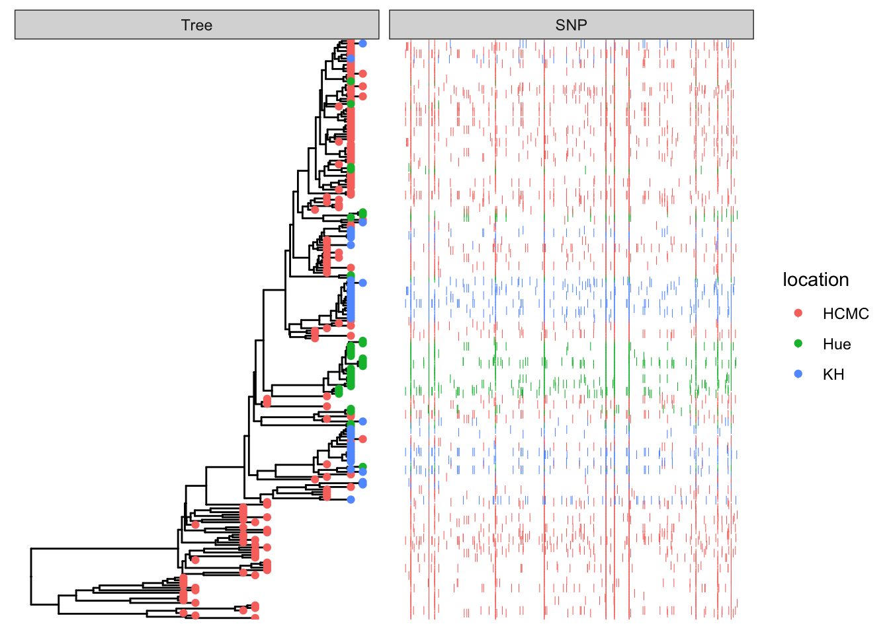
df_bar_data is some simulated data with an id column specifying the taxon names, and a dummy_bar_value containing some data.
p1 + geom_facet(panel = "Trait", data = df_bar_data, geom = geom_col,
aes(x = dummy_bar_value, color = location,
fill = location), orientation = 'y', width = .6) +
theme_tree2(legend.position=c(.05, .85))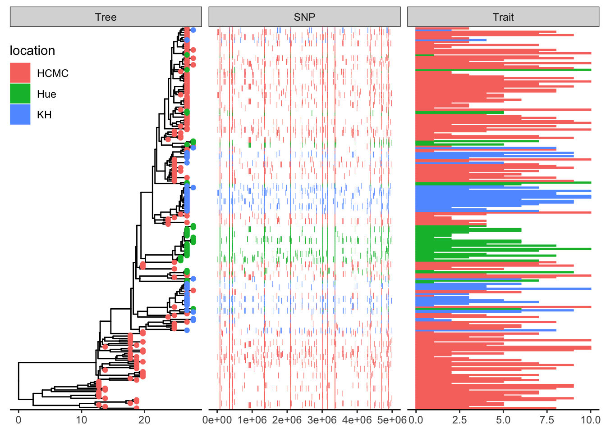
Example datasets
save to your working directory:
bigtree.nex
anolis.SSD.raw.csv
ggtree.R
This is an example of a typical workflow. We have carefully collected phenotypic data, and someone has published a massive phylogeny. We need to subset the tree to just the taxa we want to work on.